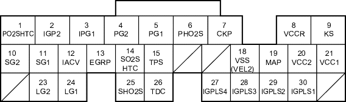

Fuel and Emissions Systems
|
11-176 |
ECM/PCM Inputs and Outputs at Connector A (31P)

Wire side of female terminals
NOTE: Standard battery voltage is 12 V.
|
Terminal number |
Wire colour |
Terminal name |
Description |
Signal |
|
14*9 |
BLK/WHT |
SO2SHTC (SECONDARY HEATED OXYGEN SENSOR (SECONDARY HO2S) HEATER CONTROL) |
Drives secondary HO2S heater |
With ignition switch ON (II): battery voltage With fully warmed up engine running: duty controlled |
|
15 |
RED/BLK |
TPS (THROTTLE POSITION (TP) SENSOR) |
Detects TP sensor signal |
With throttle fully open: about 4.8 V With throttle fully closed: about 0.5 V |
|
18*15 |
WHT/GRN |
VSS (VEHICLE SPEED SENSOR (VSS)) |
Detects VSS signal |
With ignition switch ON (II) and front wheels rotating: cycles 0 V-about 5 V or battery voltage |
|
18*16 |
BLU/WHT |
VEL2 (CVT SPEED SENSOR 2) |
Detects CVT speed sensor 2 |
Depending on vehicle speed: pulses When vehicle is stopped: about 0 V |
|
19 |
GRN/RED |
MAP (MANIFOLD ABSOLUTE PRESSURE (MAP) SENSOR) |
Detects MAP sensor signal |
With ignition switch ON (II): about 3 V At idle: about 1.0 V (depending on engine speed) |
|
20 |
YEL/BLU |
VCC2 (SENSOR VOLTAGE) |
Provides sensor voltage |
With ignition switch ON (II): about 5 V With ignition switch OFF: about 0 V |
|
21 |
YEL/RED |
VCC1 (SENSOR VOLTAGE) |
Provides sensor voltage |
With ignition switch ON (II): about 5 V With ignition switch OFF: about 0 V |
|
23 |
BRN/YEL |
LG2 (LOGIC GROUND) |
Ground for the ECM/PCM circuit |
Less than 1.0 V at all times |
|
24 |
BRN/YEL |
LG1 (LOGIC GROUND) |
Ground for the ECM/PCM circuit |
Less than 1.0 V at all times |
|
25*9 |
WHT/RED |
SHO2S (SECONDARY HEATED OXYGEN SENSOR (SECONDARY HO2S), SENSOR 2) |
Detects secondary HO2S (sensor 2) signal |
With throttle fully opened from idle with fully warmed up engine: about 0.6 V With throttle quickly closed: below 0.4 V |
|
26 |
GRN |
TDC (TOP DEAD CENTRE (TDC) SENSOR) |
Detects TDC sensor |
With engine running: pulses |
|
27 |
BRN |
IGPLS4 (No. 4 IGNITION COIL PULSE) |
Drives No. 4 ignition coil |
With ignition switch ON (II): about 0 V With engine running: pulses |
|
28 |
WHT/BLU |
IGPLS3 (No. 3 IGNITION COIL PULSE) |
Drives No. 3 ignition coil | |
|
29 |
BLU/RED |
IGPLS2 (No. 2 IGNITION COIL PULSE) |
Drives No. 2 ignition coil | |
|
30 |
YEL/GRN |
IGPLS1 (No. 1 IGNITION COIL PULSE) |
Drives No. 1 ignition coil |
|
*1: with TWC model (except KV model) *2: without TWC model *3: D15Y4, D17A2 (KU, KQ, KZ, FO models) engines *4: with cruise control *5: D15Y4, D17A2 (KU model) engines *6: D15Y4, D16W8, D16W9, D17A2, D17A5, D17Z3, D17Z4 engines *7: D16W8, D16W9 engines *8: except D15Y2, D15Y3, D15Y5, D15Y6 engines *9: D15Y6 engine *10: D15Y4, D17A2 (KU, KQ, KZ, FO models), D17Z1 (KQ model) engines *11:KU model *12 except KU model |
*13: D15Y6, D15Y3 (KY model with immobiliser, KN model), D15Y5, D15Y4, D17Z1 (KQ, KZ models), D17A1 (KK model), D17A2 (except MA model), D17A5 (KY model with immobiliser, KN model) engines *14: except D15Y3 (PA, KW, KT, KN models), D16W9 (PA model), D17A5 (KN model) engines *15: A/T and M/T *16: CVT *17: A/T and CVT *18: A/T *19:except D15Y6, D15Y3 (KY model with immobiliser, KN model), D15Y5, D15Y4, D17Z1 (KQ, KZ models), D17A1 (KK model), D17A2 (except MA model), D17A5 (KY model with immobiliser, KN model) engine |